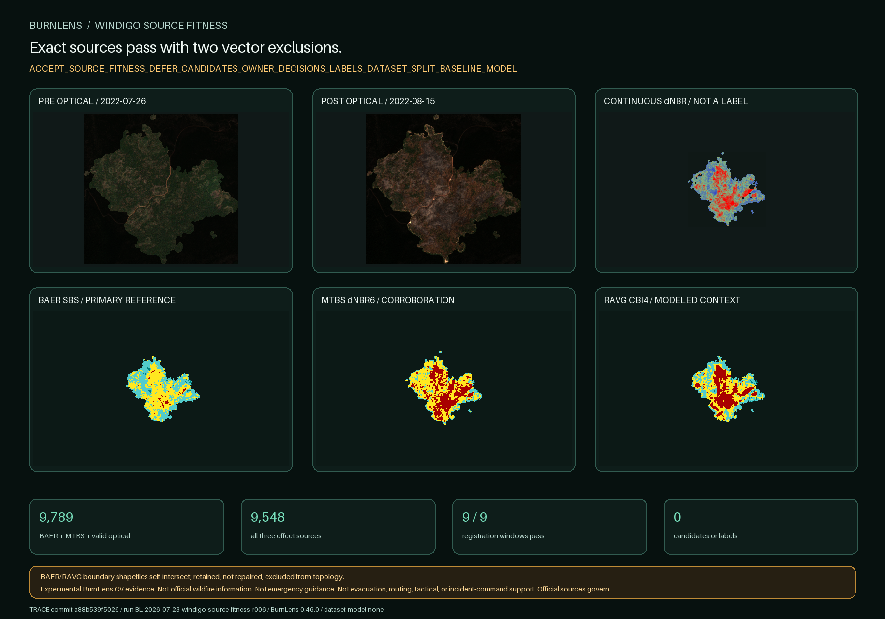

BURNLENS / PHASE TWO / ISSUE #534 / U03
Exact sources pass with two vector exclusions.

Source roles
BAER SBS: primary, field-informed soil burn severity evidence. Classes 2–4 may support one bounded burned proposal. The data remain preliminary/draft. This does not make BurnLens field validated.
MTBS: landscape-scale, analyst-interpreted corroboration. Classes 2–4 agree with BAER on 9,789 optical-valid 20 m pixel centers.
RAVG: modeled vegetation-effect context only. It cannot independently authorize a candidate.
Background: no delivered class is affirmative background truth. A separate stability-backed route remains required.
Exact selected products
| Program | Member | Native grid | Nodata | Domain | Role |
|---|---|---|---|---|---|
| BAER | baer_or4336312205020220730_10022395_20220726_20220815_sbs.tif | 547×541 | 255.0 | {'1': 153, '2': 4713, '3': 5107, '4': 246, '255': 285708} | primary_field_informed_soil_burn_severity_reference |
| MTBS | mtbs_or4336312205020220730_10029547_20220726_20230721_dnbr6.tif | 307×303 | 0.0 | {'0': 88220, '1': 21, '2': 663, '3': 2471, '4': 1646} | corroborating_landscape_scale_severity_reference |
| RAVG | ravg_or4336312205020220730_10022960_20210924_20221004_rdnbr_cbi4.tif | 303×293 | None | {'0': 84262, '1': 52, '2': 1365, '3': 1771, '4': 1329} | modeled_vegetation_effect_context_only |
| RAVG | ravg_or4336312205020220730_10022960_20210924_20221004_rdnbr_ba4.tif | 303×293 | None | {'0': 84262, '1': 369, '2': 1414, '3': 1106, '4': 1628} | modeled_basal_area_context_only |
| RAVG | ravg_or4336312205020220730_10022960_20210924_20221004_rdnbr_cc5.tif | 303×293 | None | {'0': 84262, '1': 339, '2': 1422, '3': 585, '4': 535, '5': 1636} | modeled_canopy_cover_context_only |
All comparisons use nearest-neighbor sampling onto the verified 20 m optical grid. No resolution gain is claimed.
Topology failures remain visible
| Program | Geometry | Validity | Reason | Role |
|---|---|---|---|---|
| BAER | Polygon | fail retained | Self-intersection[576902.158909917 4802164.07797682] | excluded_from_topology_decisions_retained_as_failure |
| RAVG | MultiPolygon | fail retained | Self-intersection[576902.158909917 4802164.07797682] | excluded_from_topology_decisions_retained_as_failure |
| MTBS | MultiPolygon | pass | Valid Geometry | authoritative_valid_topology |
No geometry repair was performed. The provider-generated official GeoJSON and valid delivered MTBS MultiPolygon govern topology.
Gate result
ACCEPT_SOURCE_FITNESS_DEFER_CANDIDATES_OWNER_DECISIONS_LABELS_DATASET_SPLIT_BASELINE_MODEL
U04 may build exactly one burned and one affirmative-background proposal. Owner yes/no/uncertain review and every non-owner gate remain required.
USDA Forest Service Burned Area Emergency Response; Monitoring Trends in Burn Severity Project (USGS and USDA Forest Service); USDA Forest Service RAVG; Contains modified Copernicus Sentinel data 2022, accessed through CDSE.
No accepted candidate, label, dataset, split, baseline, model, metric, independent ground truth, BurnLens field validation, official status, endorsement, operational readiness, or emergency suitability exists.
Trace: commit a88b539f50262683c88ec75286ec2d60892d25fd · BurnLens 0.46.0 · run BL-2026-07-23-windigo-source-fitness-r006 · label schema burn-scar-five-state-schema-v0.1.0 · dataset/model none.